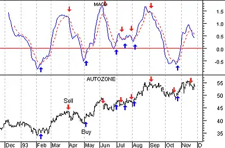
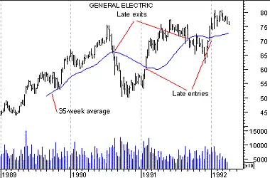
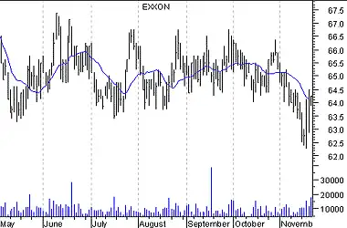

Introduction - Indicators
Indicators
An indicator is a mathematical calculation that can be applied to a security's price and/or volume fields. The result is a value that is used to anticipate future changes in prices.
A moving average fits this definition of an indicator: it is a calculation that can be performed on a security's price to yield a value that can be used to anticipate future changes in prices.
The following chapters (see page ) contain numerous examples of indicators. I'll briefly review one simple indicator here, the Moving Average Convergence Divergence (MACD).
MACD
The MACD is calculated by subtracting a 26-day moving average of a security's price from a 12-day moving average of its price. The result is an indicator that oscillates above and below zero.
When the MACD is above zero, it means the 12-day moving average is higher than the 26-day moving average. This is bullish as it shows that current expectations (i.e., the 12-day moving average) are more bullish than previous expectations (i.e., the 26-day average). This implies a bullish, or upward, shift in the supply/demand lines. When the MACD falls below zero, it means that the 12-day moving average is less than the 26-day moving average, implying a bearish shift in the supply/demand lines.
Figure 28 shows Autozone and its MACD. I labeled the chart as "Bullish" when the MACD was above zero and "Bearish" when it was below zero. I also displayed the 12- and 26-day moving averages on the price chart.
Figure 28

A 9-day moving average of the MACD (not of the security's price) is usually plotted on top of the MACD indicator. This line is referred to as the "signal" line. The signal line anticipates the convergence of the two moving averages (i.e., the movement of the MACD toward the zero line).
The chart in Figure 29 shows the MACD (the solid line) and its signal line (the dotted line). "Buy" arrows were drawn when the MACD rose above its signal line; "sell" arrows were drawn when the MACD fell below its signal line.
Figure 29
Let's consider the rational behind this technique. The MACD is the difference between two moving averages of price. When the shorter-term moving average rises above the longer-term moving average (i.e., the MACD rises above zero), it means that investor expectations are becoming more bullish (i.e., there has been an upward shift in the supply/demand lines). By plotting a 9-day moving average of the MACD, we can see the changing of expectations (i.e., the shifting of the supply/demand lines) as they occur.
Leading versus lagging indicatorsMoving averages and the MACD are examples of trend following, or "lagging," indicators. [See Figure 30.] These indicators are superb when prices move in relatively long trends. They don't warn you of upcoming changes in prices, they simply tell you what prices are doing (i.e., rising or falling) so that you can invest accordingly. Trend following indicators have you buy and sell late and, in exchange for missing the early opportunities, they greatly reduce your risk by keeping you on the right side of the market.
Figure 30
As shown in Figure 31, trend following indicators do not work well in sideways markets.
Figure 31

Another class of indicators are "leading" indicators. These indicators help you profit by predicting what prices will do next. Leading indicators provide greater rewards at the expense of increased risk. They perform best in sideways, "trading" markets.
Leading indicators typically work by measuring how "overbought" or "oversold" a security is. This is done with the assumption that a security that is "oversold" will bounce back. [See Figure 32.]
Figure 32

What type of indicators you use, leading or lagging, is a matter of personal preference. It has been my experience that most investors (including me) are better at following trends than predicting them. Thus, I personally prefer trend following indicators. However, I have met many successful investors who prefer leading indicators.
Trending prices versus trading prices
There have been several trading systems and indicators developed that determine if prices are trending or trading. The approach is that you should use lagging indicators during trending markets and leading indicators during trading markets. While it is relatively easy to determine if prices are trending or trading, it is extremely difficult to know if prices will trend or trade in the future. [See Figure 33.]
Figure 33

Divergences
A divergence occurs when the trend of a security's price doesn't agree with the trend of an indicator. Many of the examples in subsequent chapters (see page ) demonstrate divergences.
The chart in Figure 34 shows a divergence between Whirlpool and its 14-day CCI (Commodity Channel Index). [See page .] Whirlpool's prices were making new highs while the CCI was failing to make new highs. When divergences occur, prices usually change direction to confirm the trend of the indicator as shown in Figure 34. This occurs because indicators are better at gauging price trends than the prices themselves.
Figure 34